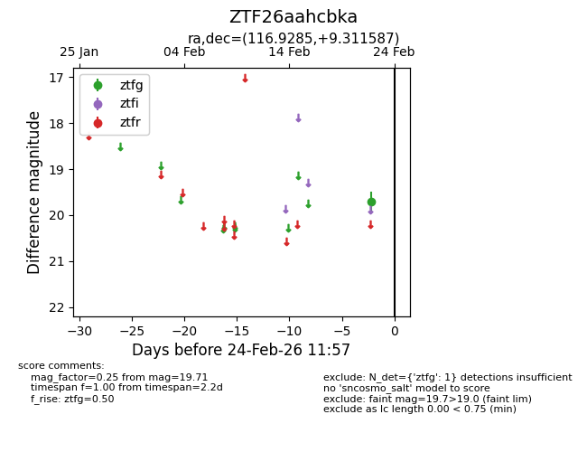
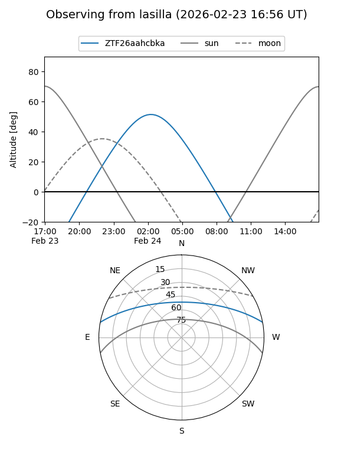
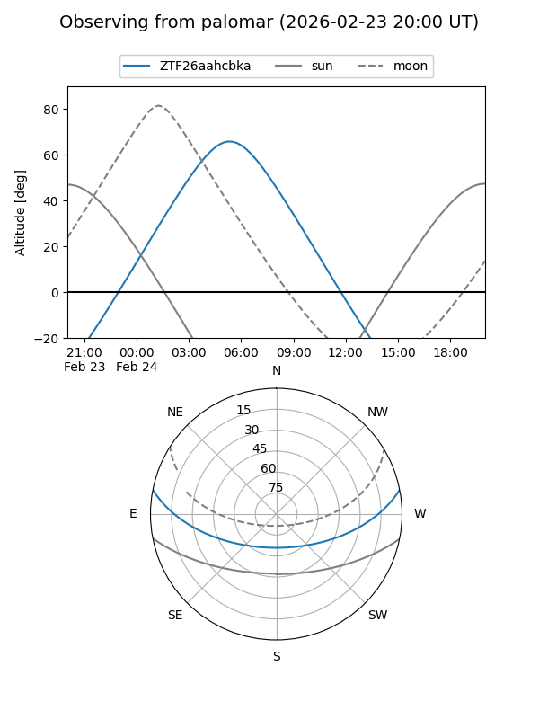

ZTF26aahcbka
Target ZTF26aahcbka at 2026-02-24 11:58
Aliases and brokers:
FINK: link
Lasair: link
ALeRCE: link
alt names
ZTF26aahcbka (ztf,fink_ztf)
Coordinates:
equatorial (ra, dec) = 116.9285,+9.31159
equatorial (HMS+DMS) = 07:47:42.83,+09:18:41.71
galactic (l, b) = (210.8607,+16.69496)
Flags:
Photometry:
last ztfg=19.71
1 ztfg detections
Lightcurve

Visibility


Additional plots